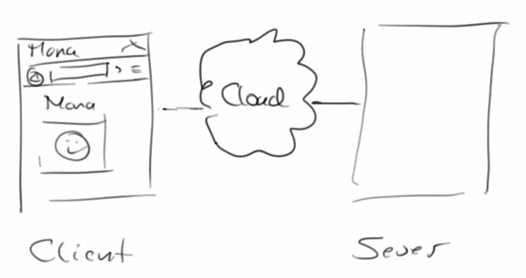
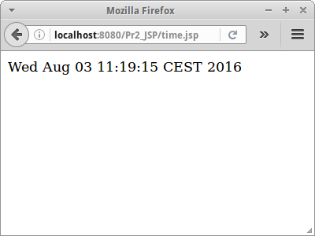
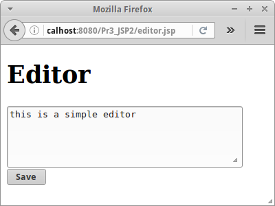

First Steps
Ursprünglich war das Web sehr statisch: es gab Text und Hypertext Dokumente (also Textdokumente mit Links), mit und ohne Bildern. Dynamisch waren die Webseiten aber noch nicht. Das änderte sich erst mit den ersten CGI-Skripten, die noch in C und Pearl geschrieben wurden, später kamen dann PHP, ASP und JSP hinzu. In letzter Zeit sind auch Python und JavaScript sehr populär geworden. JSP steht für Java Server Pages, und es ist eine Möglichkeit mit Java dynamische Webseiten zu schreiben. In diesem Kapitel geht es vor allem darum erste Schritte mit JSP zu unternehmen und das an zahlreichen Beispielen zu üben.
.
Dynamische Webseiten
Um dynamische Webseiten erstellen zu können gibt es zwei Möglichkeiten:
- clientseitig: z.B. mittels JavaScript
- serverseitig: z.B. mittels JSP oder PHP
Der Vorteil clientseitiger Webanwendungen ist, dass sie wenig Resourcen auf dem Server benötigen. Die Seite wird einmal heruntergeladen und danach erfolgen fast alle Berechnungen im Browser. Bei serverseitigen Webanwendungen hingegen werden alle Berechnungen auf dem Server ausgeführt, was in der Regel dazu führt, dass man je nach Anwendung sehr viele Server benötigt.
Aus Kostengründen würde man also clientseitige Webanwendungen wohl bevorzugen. Allerdings gibt es eben sehr viele Anwendungen die sich nicht clientseitig realisieren lassen: z.B. hat Google Maps ca 20 Petabyte an Daten. Die passen weder auf die Festplatte eines normalen Laptops, noch in ein normales Handy. Auch Websites wie Amazon oder Facebook würden nie als clientseitige Webanwendungen funktionieren. Da aber beide Arten ihre jeweiligen Stärken haben, werden diese häufig kombiniert. Deswegen wollen wir hier nicht in schwarz und weiß denken.
.
Client-Server
Microsoft's Word oder Adobe's Photoshop sind Beispiele für Anwendungen die als Desktop Applikationen sehr gut funktionieren. Google Maps oder Amazon hingegen sind Beispiele die nur mit einer Internetanbindung sinnvoll funktionieren. Diese Art von Anwendungen bestehen aus einem Server, der bei Google oder Amazon steht, wo die Daten sind und die Geschäftslogik ausgeführt wird, und einen Client, meist einem Webbrowser, der es dem Benutzer erlaubt auf die Daten zuzugreifen. Die grundlegende Idee hinter jeder Webanwendung ist die einer Client-Server Anwendung. Haben wir das erst einmal verinnerlicht, wird alles ganz einfach.

Der Client muss nicht notwendigerweise ein Browser sein: Google Maps auf mobilen Endgeräten ist ein schönes Beispiel für eine Client-Server Anwendung bei der der Client eine App ist.
.
Web Server
Wenn wir von Server reden meinen wir immer einen Webserver. Da gibt es viele verschiedene, wir werden Tomcat [2] und GlassFish [3] verwenden. Beide kommen automatisch mit der Entwicklungsumgebung NetBeans [4], werden aber auch im professionellen Umfeld verwendet. Eine kurze Einführung zu NetBeans und Webserver findet sich im Anhang.
.
Hello JSP
Nachdem wir jetzt die Grundlagen erläutert haben, können wir endlich anfangen unsere erste JSP Seite zu schreiben. JSP Seiten sind meist Text oder HTML Dateien, die aber in ".jsp" enden. Ein einfaches "Hello JSP" Beispiel soll den Anfang machen:
<% out.println("Hello JSP!"); %>
So wie es bei Java Anwendungen das "System.out.println()" gibt, so gibt es bei JSP Seiten das "out.println()". Ansonsten schreibt man innerhalb der sogenannten Scriptlet Tags "<%" und "%>" ganz normales Java.
Man kann auch HTML und Java mischen:
<html>
<body>
<h1>Loop</h1>
<p>Run Java code inside scriptlet tags: <br />
<%
for (int i = 0; i < 5; i++) {
out.print("" + i + "<br />");
}
%>
</p>
</body>
</html>
SEP: JSP Dateinamen sollten der Camel-Case Konvention folgen, und immer mit einem Kleinbuchstaben beginnen [1].
.
Was passiert mit dem Java?
Interessant ist allerdings, und das ist ganz wichtig, was beim Browser ankommt. Wenn wir mit der rechten Maustaste "Seitenquelltext anzeigen" (View Source) auswählen, dann sehen wir was wirklich beim Browser ankommt:
<html>
<body>
<h1>Loop</h1>
<p>Run Java code inside scriptlet tags: <br />
0<br />1<br />2<br />3<br />4<br />
</p>
</body>
</html>
Wir sehen also, dass der Teil innerhalb der Scriptlet Tags ersetzt wird durch die Ausgabe des out.println(...). Java Code erreicht den Browser nie.
Was passiert aber mit dem Java Code? Der wird im sogenannten "Servlet Engine" übersetzt und ausgeführt, also Tomcat in unserem Fall. Das passiert auf der Serverseite.
Schauen wir uns das mal ganz konkret am Beispiel von "loop,jsp" an. Das erste Mal wenn wir die Seite aufrufen, wird auf Serverseite vom Servlet Engine aus der JSP Seite die Java Servlet Klasse loop_jsp dynamisch generiert. Die kann man im Verzeichnis "/glassfish-4.0/glassfish/domains/domain1/generated/jsp/Pr2_JSP/org/apache/jsp/" finden:
public final class loop_jsp extends HttpJspBase ... {
...
public void _jspService(HttpServletRequest request, HttpServletResponse response)
throws java.io.IOException, ServletException {
...
out.write("<html>\n");
out.write(" <body>\n");
out.write(" <h1>Loop</h1>\n");
out.write(" <p>Run Java code inside scriptlet tags: <br />\n");
for (int i = 0; i < 5; i++) {
out.print("" + i + "<br />");
}
out.write("\n");
out.write(" </p>\n");
out.write(" </body>\n");
out.write("</html>");
...
}
}
Und wenn wir den Java Code mit dem ursprünglichen JSP vergleichen, sehen wir was da passiert: alle HTML Elemente werden einfach mittels out.println(...) eingebettet, während der Java Code einfach eins-zu-eins in die Methode _jspService() an die entsprechende Stelle kopiert wird. Diese loop_jsp Klasse wird dann auf dem Server kompiliert, von der JVM in den RAM geladen und anschließend auf dem Server ausgeführt. An den Browser wird dann lediglich das Resultat geschickt.
Die dynamische Java Code Generierung und das anschließende Kompilieren kostet natürlich Zeit, deswegen dauert der erste Aufruf einer JSP Seite immer ein bischen länger. Da dieser Schritt aber nur beim erstmaligen Aufrufen stattfinden muss, sind die nachfolgenden Aufrufe sehr viel schneller, auch im Vergleich zu anderen ähnlichen Technologien. Dieser kleine Nachteil ist leicht in Kauf zu nehmen, wenn man dies der Einfachheit der Erstellung von JSP Seiten und den damit verbunden Ersparnissen bei der Entwicklungszeit gegenüberstellt.
Ein anderer wichtiger Vorteil dieser serverseitgen Technologien, also JSP und Servlets, ist der Schutz des eigenen geistigen Eigentums (Intelectual Property). Denn im Gegensatz zu clientseitigen Technologien, wie z.B. JavaScript oder Java Applets, wird kein Sourcecode zum Browser geschickt. Der Quellcode wird am Server übersetzt und ausgeführt, der Client bekommt nur die Resultate des ausgeführten Codes zu sehen. JSP und Servlets sind auch die Ursache für den grossen Erfolg Java's.
.
Time
Wenn wir im Hinterkopf behalten, dass JSP Seiten immer in Java Klassen übersetzt werden, dann werden uns die nächsten Schritte viel einleuchtender erscheinen. Beginnen wir mit dem Benutzen von standard Java Klassen. Das folgende Beispiel zeigt, wie wir Java's Date Klasse in einer JSP Seite verwenden können:
<%@page import="java.util.Date"%>
<%
out.println( new Date() );
%>
Das geht auch mit fast jeder anderen Java Klasse so. Der Syntax für den Import ist etwas gewöhnungsbedürftig, erinnert aber an den normaler Java Klassen.
Die Frage die sich vielleicht stellt, ist welche Klassen kann man nicht verwenden? Es sind die Klassen die mit Graphik zu tun haben, also z.B. alle AWT und Swing Klassen. Macht Sinn.
.
Random / Lottery
Auch eigene Methoden können wir schreiben. Dazu gibt es ein spezielles JSP Tag, das sogenannte Declaration Tag: <%! ... %>. Im Gegensatz zu normalen Scriptlet Tags, muss das Declaration Tag am Anfang einer JSP Seite stehen.
<%! private int nextInt(int max) { return (int) (Math.random() * max); } %> <% out.println(nextInt(6) + 1); %>
Es gelten die normalen Java Regeln für Methoden. Im Beispiel oben sehen wir wie die Methode nextInt() deklariert und anschliessend benutzt wird.
.
CountDown
Da aus einer JSP Seite ja eine Klasse generiert wird, stellt sich die Frage ob man auch Instanzvariablen und Konstanten deklarieren kann? Das CountDown Beispiel zeigt, dass das wie bei Methoden auch, im Declaration Tag gemacht werden kann:
<%!
private int counter = 30;
%>
<%
out.println(counter--);
%>
Damit der Countdown funktioniert, müssen wir die Seite neu laden. Es gibt mehrere Möglichkeiten eine Seite neu zu laden, bei Firefox geht das z.B. mittels:
- Klicken auf den Reload Button
- des Tastenkürzel Strg-R
- der Funktionstaste F5
Eine kleine Anmerkung am Rande: obwohl es den Anschein hat, dass alle drei "Reloads" genau das gleich tun, ist das nicht der Fall. Später werden wir sehen was der subtile Unterschied ist.
.
Zwei Browser
Eigentlich schreibt man ja Webapplikationen, damit sie von mehreren Benutzern genutzt werden können. Das führt zu sehr interessanten Effekten, und den ersten sehen wir in unserem CountDown Beispiel: Wenn wir auf die Seite mit einem Browser zugreifen, dann funktioniert das total super. Was passiert aber wenn wir einen zweiten Browser aufmachen, und einmal in dem einen Browser einen Reload machen, und dann in dem anderen?
Naiv würden wir hoffen, dass jeder Browser seinen eigenen Zähler hat, also bei 30 beginnt, und dann bei jedem Reload nur seinen Zähler herunterzählt. Das ist aber nicht so. Anscheinend gibt es nur einen Zähler, auf den beide Browser zugreifen. Wenn wir aber kurz nachdenken, ist da eigentlich total logisch: Der Code wird ja auf dem Server ausgeführt, und dort gibt es nur ein Objekt, auf das zufälliger Weise von zwei (oder mehr) Browsern zugegriffen wird. Die Internetprogrammierung hat viele interessante Fallstricke, und in unserem CountDown Beispiel treffen wir den ersten.
Eine kleine Anmerkung: die Aussage, dass es nur ein Objekt von jeder JSP Seite gibt ist nicht immer richtig. Normalerweise ist das zwar der Fall, allerdings kann man das in den Server Einstellungen beeinflussen: man kann dem Server z.B. sagen, dass er bei hoher Last mehr als ein Objekt für eine gegebene JSP Seite instanziieren soll.
SEP: Man sollte seine Webapplikationen immer mit mehreren Browsern gleichzeitig testen.
.
Eigene Klassen
Wir haben gesehen, dass JSP Seiten eigentlich nur Java Klassen sind, und als solche können wir alle Java Klassen verwenden, wir können Instanzvariablen und Konstanten definieren, und wir können auch Methoden definieren. Bleibt die Frage, können wir auch lokale und anonmyme Klassen definieren, oder sogar andere selbstgeschriebene Klassen verwenden. Und die Antwort ist: "jo, das können wir".
Das Beispiel PasswordCreator zeigt wie das geht. Ein eigene Klasse zu verwenden geht genauso wie eine der Java Klassen:
<%@page import="de.variationenzumthema.internet.PasswordCreator"%> <% out.println(PasswordCreator.generatePassword()); %>
Wir müssen unsere Klasse PasswordCreator natürlich irgendwo definieren. In Netbeans befinden diese sich in Verzeichnis "/src/java/" unseres Projektes. Die Klasse selbst ist eine ganz normale Java Klasse:
package de.variationenzumthema.internet;
public class PasswordCreator {
private static final String small = "abcdefghijklmnopqrstuvwxyz";
private static final String big = "ABCDEFGHIJKLMNOPQRSTUVWXYZ";
private static final String numbers = "0123456789";
private static final String symbols = "!#$%&'()*+,-./:;<=>?@[]^_{|}";
public static String generatePassword() {
String password = "";
password += small.charAt(nextInt(small.length()));
password += big.charAt(nextInt(big.length()));
password += numbers.charAt(nextInt(numbers.length()));
password += symbols.charAt(nextInt(symbols.length()));
password += small.charAt(nextInt(small.length()));
password += big.charAt(nextInt(big.length()));
password += numbers.charAt(nextInt(numbers.length()));
password += symbols.charAt(nextInt(symbols.length()));
return password;
}
private static int nextInt(int max) {
return (int)(Math.random()*max);
}
}
.
SEP: Wenn wir eigene Klassen in JSP Seiten verwenden, sollten diese niemals im default Paket sein.
.
Logging
Als wir noch normales Java geschrieben haben, also J2SE, gab es immer die Konsole. Man konnte mit "System.out.println()" etwas auf der Konsole ausgeben. Die "Konsole" als solche gibt es auf einem Server nicht. Dafür gibt es aber Logdateien. Meist nur eine, manchmal aber auch mehrere. Wenn wir also auf einen Server etwas mit ausgeben wollen, dann landet das in der Logdatei. In GlassFish kann man alles was in die Logdatei geschrieben wird im "Output" Fenster unter GlassFish Server sehen. Man kann aber auch direkt zur Logdatei gehen, die findet man unter Services->Server->GlassFish, dann Rechtsklick und ’View Server Log’ auswählen.
Jetzt ist es aber so, dass System.out.println() nicht gerade die feine englische ist wenn man auf dem Server lebt. Da gibt es nämlich die Klasse Logger, die für alles was mit Logdateiein zu tun hat viel besser geeignet ist. Verwendet wird die Klasse wie folgt:
<%@page import="java.util.logging.*"%> <html> <body> <h1>Logging</h1> <% // one way to log to the servers log files is via System.out.println("First log message."); // another more professional way is via Logger logger = Logger.getLogger(this.getClass().getName()); logger.severe("Second log message."); %> </body> </html>
Der Vorteil von Logger ist, dass er viel spezifischer ist, was die Log-Message angeht. So gibt es verschiedene Levels für Log-Messages:
- info: einfach nur so mal sehen ob der Code ausgeführt wird
- warning: etwas ist ungewöhnlich, aber wahrscheinlich kein Problem
- severe: etwas ist wirklich nicht in Ordnung
Es gibt noch ein paar andere Log-Levels, aber die drei sind die wichtigsten. Der Vorteil des Loggers ist nun, dass man ihn unterschiedlich konfigurieren kann: auf der Maschine eines Entwicklers würde man alle Log-Messages sehen wollen, aber auf der Production-Machine, möchte man eigentlich nur diejenigen geloggt haben, die wirklich schwerwiegende Fehler darstellen. Denn zu viel loggen kann die Performance eines Servers negativ beeinflussen. Und es ist schon häufiger passiert, dass ein Server abgestürtzt ist, weil er keinen Plattenplatz mehr frei hatte. Der Grund dafür: richtig, Riesen-Log-Files.
.
Review
Wir haben unsere ersten Schritte in Richtung dynamischer Webprogrammierung unternommen. Dabei haben wir
- von Clients und Servern gehört
- das Scriplet Tags und das Declaration Tag kennen gelernt
- gesehen wie wir Instanzvariablen, Methoden und Klassen in JSP Seiten verwenden können
- und wie das mit dem Logging funktioniert.
Die Projekte die folgen zeigen einige einfache Anwendungen die mit JSP erstellt werden können und vermitteln aber auch noch einige andere hilfreiche Konzepte in diesem Zusammenhang.
.
Projekte
Die Projekte die folgen zeigen, dass sich das bischen JSP das wir bisher gelernt haben schon zu was gebrauchen lässt.
.
Clock
Das Beispiel Time das wir oben gesehen haben war sehr statisch, d.h. die Uhrzeit hat sich nicht verändert. Das ist generell ein Problem mit Webanwendungen. Mithilfe des Meta Refresh Tags können wir etwas Dynamik in unsere Webanwendungen bringen. Wir veranlassen den Browser einfach einmal pro Sekunde die Seite neu zu laden. Wenn wir dann noch die Klasse SimpleDateFormat zum Formatieren der Uhrzeit verwenden, kann sich das Resultat schon sehen lassen.
<html> <head> <meta http-equiv="refresh" content="1" /> </head> <body><h1> <% SimpleDateFormat formater = new SimpleDateFormat("HH:mm:ss"); Date now = new Date(); out.println(formater.format(now)); %> </h1></body> </html>
Ein kleiner Nachteil dieser Anwendung ist, dass sie eine relativ hohe Last auf unserem Server erzeugt. Wenn nämlich viele Leute unsere Seite aufrufen, und jeder die Seite einmal in der Sekunde läd, dann kommt da einiges an Datenvolumen und Last auf unseren Server zu. Eine Anwendung wie Clock würde wahrscheinlich besser mittels JavaScript implementiert.
.
Visitor*
Basierend auf dem CountDown Beispiel können wir auch einen Visitor Counter implementiern.
<%! private int visitorCounter = 0; %> <html> <body> <h2>Welcome, Visitor Nr. <%= ++visitorCounter %></h2> </body> </html>
Wenn wir die Seite von verschiedenen BrowserTabs oder anderen Browsern besuchen, werden wir sehen, dass jedesmal wenn die Seite von irgendjemandem geladen wird, der Zähler um eins hoch gezählt wird.
Obwohl es so aussieht, wie wenn die Anwendung tadellos funktionieren würde, ist etwas Vorsicht geboten. Bei geringer Serverlast und wenig Nutzern funktioniert die Anwendung auch einwandfrei. Überlegen wir kurz was schiefgehen kann: Wir haben ja gelernt, dass aus einer JSP Seite eine Java Klasse generiert wird. Diese wird dann kompiliert, und der Webserver, genauer der Servletcontainer, instanziiert dann ein Objekt von dieser Klasse. Das ist wenigstens was wir hoffen. Meistens ist das auch so. Allerdings unter sehr hoher Last, oder wenn der Servletcontainer entsprechend konfiguriert ist, können es auch mal zwei oder noch mehr Objekte sein. Würde dann unser Visitor Counter noch funktionieren? Was auch passieren kann, wenn andere Seiten unter hoher Last sind, dass unser Objekt vom Garbage Collector eingesammelt wird, weil es gerade nicht gebraucht wird. Dann würde unser Zähler beim nächsten Aufruf wieder von null anfangen.
.
Init and Destroy*
Manchmal möchten wir, dass etwas beim ersten Ausführen einer JSP Seite passiert, z.B. irgendeine Initialisierung. Oder wir möchten kurz bevor der Server runtergefahren wird noch etwas in einer Datei oder Datenbank sichern. Das können wir mit den zwei vordefinierten Methoden jspInit() und jspDestroy() lösen. Beide müssen im Deklarationsteil des JSP stehen, sind ja Methoden:
<%! public void jspInit() { System.out.println("jspInit() was called."); } public void jspDestroy() { System.out.println("jspDestroy() was called."); } %>
Die Methode jspInit() wird nur einmal aufgerufen, und zwar wenn unsere Seite das erst Mal geladen wird. Umgekehrt wird die Methode jspDestroy() aufgerufen wenn die Anwendung "undeployed" wird, oder der Server runtergefahren wird.
.
Exceptions
Wie mit jedem Java Code kann es auch bei JSP Seiten zu Exceptions kommen. Und wie wir das bereits im ersten Semester gelernt haben, sollten wir Exceptions immer behandeln. Bei Webanwendungen kommt noch hinzu, dass unbehandelte Exceptions u.U. dazu führen können, dass Hacker oder andere Bösewichte an kritische Informationen gelangen können. Deswegen sollten wir extra vorsichtig sein, und wenn möglich es zu keinen unbehandelten Exceptions kommen lassen.
Wenn eine Exception auftritt, macht es Sinn diese zu loggen:
<%@page import="java.util.logging.*"%> <html> <body> <h1>Exceptions</h1> <% try { int x = 5 / 0; } catch (Exception ex) { Logger logger = Logger.getLogger(this.getClass().getName()); logger.severe("Exception occured: "+ex); } out.println("Exception was caught, life is good."); %> </body> </html>
Und natürlich sollte man regelmässig seine Logfiles durchgehen um nach Unerwartetem zu suchen.
.
ErrorPermGenSpace
Weil wir gerade bei Fehlern sind: an manchen Fehlern sind wir Schuld und an manchen Fehlern sind die bösen Nutzer Schuld. Dafür gibt es Exception Handling. Aber es gibt auch Fehler für die weder die Entwickler noch die Nutzer etwas können. Im Prinzip gibt es da drei Hauptverdächtige:
- der Webserver / Servlet Engine: z.B. der Fehler rechts ist so einer, scheint ein Memory Leak zu sein
- die Datenbank: manchmal werden Datenbank Verbindungen nicht geschlossen, oder es gibt offene Locks, etc.
- das Betriebssystem: z.B. Festplatte ist voll.
Manchmal ist es auch die Hardware, aber das ist sehr selten.
.
index.jsp
Für jede unserer zwölf Netbeans Projekte benötigen wir eine "index.jsp" Seite. Die unterscheiden sich lediglich im Inhalt, aber der Aufbau dieser Seiten ist eigentlich identisch. Wie üblich, wollen wir eigentlich so wenig Code wie möglich ändern müssen, wir schreiben REUSE ganz gross.
Eine Möglichkeit das zu tun, ist den Inhalt der Seite über ein Array treiben zu lassen:
...
String[] jspPages = {
"clock", "visitor", "exceptions",
"guestBook", "editor", "file", "pizzaMenu"
};
...
Damit sollte es möglich sein die Seite rechts dynamisch zu generieren. Lediglich die Überschrift müssen wir noch anpassen.
.
Shopping
Der Klassiker unter den Internetanwendungen ist die Shopping Anwendung. Hier in unserem ersten Versuch, wollen wir nur den Inhalt des Warenkorbs (einfach ein Vector) ausgeben. Dazu definieren wir erst mal den Warenkorb:
<%
Vector<String> cart = new Vector<String>();
cart.add("Butter");
cart.add("Milk");
cart.add("Honey");
...
%>
und daraus generieren wir dann das HTML rechts.
.
Vector vs List
Es mag etwas ungewöhnlich erscheinen warum wir im letzten Beispiel die Klasse Vector verwendet haben und nicht die Klasse ArrayList, die wir bisher immer verwendet haben. Der Grund liegt darin, dass Webanwendungen nicht notwendigerweise threadsafe sind. Wir werden später mehr dazu hören, aber im Moment wollen wir lediglich anmerken, dass die Klassen Vector und Hashtable threadsafe sind, die Klassen ArrayList, LinkedList, HashMap und TreeMap dagegen nicht. Aber wie gesagt später mehr dazu.
.
Editor
Im nächsten Kapitel möchten wir einen kleinen Texteditor schreiben. Dazu brauchen wir einmal eine HTML Seite mit einem Formular und einer TextArea sowie einem Submit Knopf. Der Inhalt des Formulars soll an die Seite editorLogic.jsp geschickt werden, die wir im nächsten Kapitel schreiben werden. Was wir hier allerdings schon machen wollen, ist den Inhalt einer Datei innerhalb der TextArea anzuzeigen:
<textarea name="text" rows="4" cols="40">
<%
try {
BufferedReader br =
new BufferedReader(new FileReader("editor.txt"));
StringBuffer sb = new StringBuffer();
while (true) {
String line = br.readLine();
if (line == null) {
break;
}
sb.append(line);
}
out.println(sb);
} catch (Exception e) {
out.println("Type something here and save it!");
}
%></textarea>
Natürlich muss die Datei editor.txt existieren, sonst kommt es zu einer Exception. Wenn wir die Seite das erste Mal ausführen, dann gibt es diese Datei aber noch nicht und es kommt zu einer Exception. Deswegen geben wir dort einen kleinen Hinweis für den Nutzer.
.
Files
Ganz ungefährlich ist das Arbeiten mit Dateien nicht. Wenn wir z.B. irgendwo dem Nutzer erlauben einen Dateinamen einzugeben, dann könnte ein Schlaumeier auf die Idee kommen "../../../../../../../" als Dateiname einzugeben:
<%
try {
File f = new File("../../../../../../../");
//out.println(f.getCanonicalPath() + "<br/>");
String[] files = f.list();
Arrays.sort(files);
for (String fl : files) {
out.println(fl + "<br/>");
}
} catch (Exception e) {
out.println(e);
}
%>
Die Problematik sollte offensichtlich sein. Falls nicht, dann freuen sich die Hacker auf unsere Webanwendungen...
SI: Wir solllten niemals dynamische Dateinamen zulassen.
.
PizzaMenu
Das eine oder andere Restaurant hat inzwischen sein Menü digitalisiert. Manche habe es im Internet, manche aber auch auf einem Monitor im Restaurant. In dem ersten Teil wollen wir aus dem folgenden String,
<% String menu = "Best Pizza\n" + "Margherita: tomato sauce, mozzarella\n" + "Funghi: tomato sauce, mozzarella, mushrooms\n" + "Capricciosa: tomato sauce, mozzarella, mushrooms, ham," + "eggs, artichoke, cocktail sausages, green olives\n" + "Quattro Stagioni: tomato sauce, mozzarella, ham, black " + "olives, mushrooms, artichoke, peas, salami, eggs\n" + "Vegetariana: tomato sauce, mozzarella, mushrooms, onion, " + "(artichoke), sweet corn, green peppers\n" + "Quattro Formaggi: tomato sauce, and 4 assorted cheeses, " + "generally mozzarella, parmesan cheese, blue cheese, and goat cheese\n"; %>
eine hübsche HTML Seite wie rechts generieren. Dabei sind evtl. die folgenden beiden Zeilen hilfreich:
BufferedReader br = new BufferedReader(new StringReader(menu));
...
String[] pizz = line.split(":");
...
Wir gehen also davon aus, dass die erste Zeile die der Nutzer eingibt der Name des Restaurants ist, in unserem Beispiel "Best Pizza". Die nächsten Zeilen listen die verschiedenen Pizzen, jeweils mit dem Namen der Pizza beginnend, einem Doppelpunkt, gefolgt von den Zutaten. Im nächsten Kapitel sehen wir dann wie wir damit eine Webanwendung machen können mit der man dann das Menü öfter mal ändern kann.
Vielleicht noch erwähnenswert: All die Seiten die wir jetzt schon geschrieben haben, können wir nicht nur auf unserem Computer ansehen, sondern auch auf anderen Computern. Wir müssen dazu lediglich die IP Adresse des Rechners wissen auf dem unser Server läuft (bei mir ist das gerade die "192.168.178.43"), und tippen dann folgendes in die Adresszeile des Browsers auf dem anderen Computer:
http://192.168.178.43:8080/Pr2_JSP/pizzaMenu.jsp
Ziemlich cool, oder? Wenn wir eine externe IP Adresse haben (eher unwahrscheinlich) dann könnte sogar die ganze Welt jetzt schon unsere Webseiten ansehen!
.
Research
Auch in diesem Kapitel gibt es einige Themen die man noch durch Eigenrecherche vertiefen kann.
.
Servlet Engines und Webserver
Wir wollen im Internet nach den Begriffen "Servlet Engines", manchmal auch "Servlet Container" genannt und Webservern suchen. Dabei sollten wir mindestens fünf oder sechs verschiedene finden. Uns sollte klar werden was der Unterschied zwischen Servlet Engines und Webservern ist, und welcher wohl für unsere Zwecke am besten geeignet ist. Wir sollten uns aber auch Kriterien überlegen, nach denen wir einen Servlet Engines und einen Webservern für eine Produktionsserver unserer zukünftgen Firma auswählen würden.
.
JSP, PHP und ASP
Neben JSP gibt es auch noch andere Webtechnologien, wie z.B. PHP, ASP, aber evtl. auch JavaScript oder Python. Wir sollten uns auch die Konkurrenz mal ansehen und darüber etwas in Erfahrung bringen. Schliesslich sollten wir auch eine kleine Tabelle machen, in der wir diese nach verschiedenen Kriterien gegenüber stellen, wie z.B.
- Performance
- Popularität
- Einfachheit, auch zu Lernen
- Sicherheit
- Unterstützung eines Testing-Frameworks wie JUnit
- Unterstützung von Reflection und Generics
.
CGI
Das Common Gateway Interface (CGI) ist ein uralt Standard für den Datenaustausch zwischen Servern und Clients, und Basis von dynamischen Webanwendungen. Es macht Sinn sich in die Thematik einmal einzulesen, vor allem wenn man ein bischen ein Interesse für die Geschichte des Internets hat.
.
Fragen
-
Wir wollen das Datenvolumen abschätzen, das eine Anwendung wie Clock auf unserem Server verursacht. Gehen Sie davon aus, dass die Seite 1 kByte groß ist, dass die Seite sich einmal pro Sekunde neu lädt, und dass wir im Durchschnitt 1000 Nutzer haben, die diese Seite im Browser offen haben. Schätzen Sie das Datenvolumen im Monat ab, denn dafür bezahlen Sie Ihrem Serviceprovider.
-
In JSP gibt es Deklarationen (<%!...%>) und Code-Fragmente (<%...%>). Wann und wofür würden Sie welches verwenden?
-
Erklären Sie wann die beiden Methoden jspInit() und jspDestroy() aufgerufen werden, und wofür man sie verwenden könnte.
-
Schreiben Sie eine JSP Seite, lotto.jsp, die sechs Zufallszahlen zwischen 1 und 49 erzeugt und diese sortiert ausgibt. Ein Bonus wäre, wenn es keine Duplikate gibt. Hinweis, die folgenden Zeile könnten hilfreich sein:
<%@page import="java.util.TreeSet"%>
-
Schreiben Sie eine JSP Anwendung, die aus drei JSP Seiten besteht:
login.jsp: Auf dieser Seite kann der Benutzer seinen Namen und sein Passwort eingeben. Die Aktion des Form Tags sollte auf die Seite 'check.jsp' weiterleiten.
check.jsp: Diese Seite sollte den eingegebenen Namen und das Passwort auf Richtigkeit überprüfen (dabei dürfen Sie in Ihrem Code feste Werte für den korrekten Namen und das korrekte Passwort verwenden). Sind die Eingaben des Benutzers richtig, so sollte der Benutzer auf die Seite 'welcome.jsp' weitergeleitet werden, andernfalls sollte er auf die 'login.jsp' Seite zurückgeschickt werden.
welcome.jsp: Diese Seite sollte einen Text anzeigen, dass sich der Benutzer erfolgreich angemeldet hat. Beachten Sie bitte, dass nach einer erfolgreichen Anmeldung im session Objekt irgendwie kenntlich gemacht werden sollte, dass der Benutzer sich erfolgreich angemeldet hat.
-
Wann wird eine JSP Seite kompiliert?
O Beim Hochladen auf den Server
O Jedes Mal wenn ein User darauf zugreift
O Das erste Mal wenn ein User darauf zugreift
.
Referenzen
Hier gibt's nur eine Referenz. Aber natürlich kann man in der Wikipedia nachschauen, wenn man mehr wissen will. Immer ein guter Anfang. Man sollte da halt nur nicht aufhören.
[1] Guidelines, Patterns, and code for end-to-end Java applications, http://www.oracle.com/technetwork/java/namingconventions-139351.html
[2] Tomcat, http://tomcat.apache.org/
[3] GlassFish, https://glassfish.java.net/
[4] NetBeans, https://netbeans.org/
.